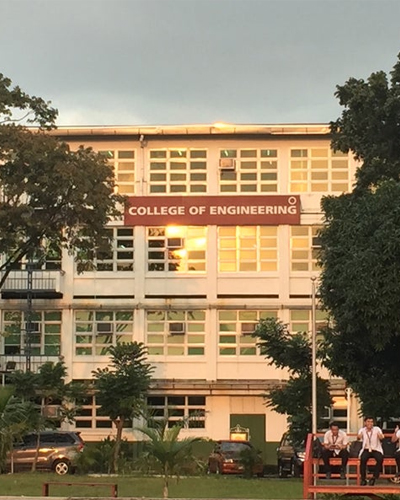
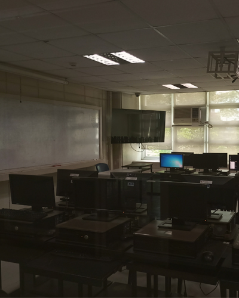
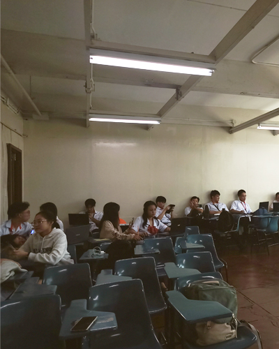
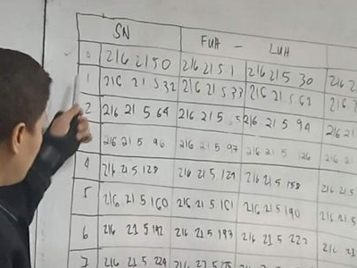
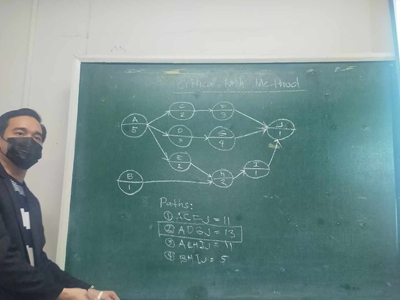
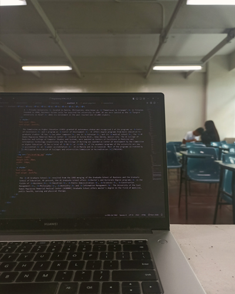

| L | E | A | R |
| N | I | N | G |
|
Wake School Sleep Repeat |
|||

As an IT student, the usual routine to do is to wake up early, go to school, expose your eyes, and sleep-coding all night. The constant thoughts of bugs and ideas to fix those said bugs keep you awake and envious to open your device just to simply fix it while you can see it in your head. Sometimes, you wake up from a nightmare that you did not save your latest build tormenting yourself that you have to redo everything from nothing or worse; a bug.
University of the East
A Private University located in Manila, Philippines; also known as "Pamantasan ng Silangan" in Filipino. Founded in 1946, business tycoon Lucio Tan acquired the university in 1990. UE was once labeled as the "largest university in Asia" when its enrollment in the past reached over 65,000 students.
The Commission on Higher Education (CHED) granted UE autonomous status and recognized 2 of its programs as Center of Excellence and 1 program as Center of Development. UE offers degree programs from basic education to graduate studies. UE has two other campuses, one in Caloocan, and its medical school, the UE Ramon Magsaysay Memorial Medical Center located in Aurora Blvd., Dona Imelda, Quezon City. The UE College of Medicine and College of Computer Studies and Systems, were awarded as Centers of Excellence in Medicine and Information Technology respectively and The College of Nursing was awarded as Center of Development by the Commission on Higher Education. It has a total of 50 or 93% of the academic programs of the university are now accredited or under accreditation: 34 in Manila and 16 in Caloocan. Most of the programs accredited by Philippine Association of Colleges and Universities Commission on Accreditation (PACUCOA).
The UE Graduate School resulted from the 1982 merging of the Graduate School of Business and the Graduate School of Education. At present, the UE Graduate School offers Master's and Doctorate Degree programs in the fields of Business, Education, Public Administration, Sciences, Construction Management, Philosophy, Dentistry and Information Management.
The University of the East Ramon Magsaysay Memorial Medical Center (UERMMMC) Graduate School offers master's degree in the field of medicine, public health, nursing and physical therapy.
Information Technology in UE
A course offered in The College of Engineering located at the Engineering building located at the far opposite of the main entrance. It follows a curriculum consisting of entry level to vast and various expertise and specialization such as Data Analysis, Networking, Programming, Process Management, Web Development, Data Management, and more.
|

Building Exterior
|

Laboratories
|

Classrooms
|
|

Networking with Sir. Rutaquio |

System Analysis with Sir. Celis |
Furthermore, the quality of IT teachings in UE is quite good and sometimes, in detail. Some teachers definitely know what their course is; may it be due to their specialization before teaching or be due to their past experiences. Conversely, some are just right and improvements can still be reinforced. Unfortunately, it is a must to have a laptop at laboratory sessions since the computers are not well equiped and sometimes, does not even work. It is a shame to have a part of your tuition fee be payed for defective and slow devices, which are necessary as an IT student. Finally, being an IT in the university is a fun way to understand logic and acquire technical knowledge, which build up the way to become a competent tech-savy and create systems that can facilitate works and businesses.
Personal Thoughts
in Academic Life
As a student, it is full of hardships, struggles, consistent studies, and sacrifices. However, these are all common especially that we are now more mature and have many responsibilities to deal with. It is an ordinary and usual occurence that are only escapable when you accepted it. My current routine is to simply wake up in the morning, may it be late or not due to fatigue and physical energy; then go straight prepare myself without eating and rush to school. It is painfully unfortunate that my schedule is so tight to the point that I barely, sometimes not even, eat breakfast and lunch. The constant, quasi-no break, courses' period hurry us to learn and listen to the professor having barely eaten meals. It is a must to appreciate the little time in between periods to consume food or feel your stomach growl during classes. I will share later in the blog, my academic schedule with more, but brief, explanation. For now, after classes have finished, the fatigue sets in to the point that even going home makes you feel more tired. Regardless, it became autonomous and mindless as if you are a robot. This cycle, then, repeats until the week has terminated. However, there is no point of enjoying weekends since that is when you can have all the time to finish assignments, projects, deliverables; and review for quizess and recitations. Personally, I find it challenging and a way for me to become a more responsible person. There is nothing wrong about it due to the fact that real life work is intensely and deprivingly harder than what I am experiencing right now. I guess that my mind is simply trying to adjust to this new lifestyle.
As mentioned in the previous section, being an IT in UE is quite good and honest. The teachings and professors, may they be pedagogique or not; are all tolerable, amusing, and professional. Although, of course, some can be a little terrifying but that is solely because they are professors doing their job. Like our professors always say:
|
"Walang personalan, ha? Ginagawa ko lang ang trabaho ko kaya umayos kayo kung ayaw nyong bumagsak. Taga-compute lang ako. Kayo ang taga-gawa." "Don't take it personally, ok? I'm simply doing my job so be responsible if you don't want to fail. I'm but a computer and you create your grades." |
It is true when you reflect on it. They are simply doing their job so must we. They teach but it is our job as students to learn even without their help. Because even if they teach us rigorously and intensively but we, ourselves, do not wish to learn or study; then, it is our own decision that leads us to our proper, appropriate consequences. Moreover, subjects or courses only become hard when we are not interested in them. Personally, I find Web Development interesting since I am an artistic, in heart, but wasn't able to develop my competence due to regrettable decisions and choices. My passion is to realize my imagination and visualize my thoughts that may inspire others or please their hearts. The beauty of the world is not limited to what we sense and perceive but to how we think. In addition, networking and data analytics are a little intriguing since they deal with numbers and analysis. I grew up with Math and Science being the main two things that filled my curious mind. The theories and concepts are powerful enough to prompt imagination and wonders to bloom. Finally, the rest of my courses does not arouse my curiousity so, I simply told myself that I will still do my best but not concentrate as much. They are either boring or the professor is not enthusiastic enough to invoke engagement from our hearts.
Academic Life
|
MONDAY |
TUESDAY |
WEDNESDAY |
THURSDAY |
FRIDAY |
|---|---|---|---|---|
|
7:30 AM - 8:30 AM PPF 2306 Group Games |
8:00 AM - 10:00 AM CIT 2201 Networking 1 |
7:30 AM - 8:30 AM PPF 2306 Group Games |
7:30 AM - 10:30 AM CIA 1101 Information Assurance and Security 1 |
11:00 AM - 13:00 NN CIP 1101 Integrative Programming and Technologies 1 |
|
9:00 AM - 10:30 AM ZGE 4305 Religions, Religious Experiences and Spirituality |
10:30 AM - 13:30 PM CIT 2201 Networking 1 (Laboratory) |
9:00 AM - 10:30 AM ZGE 4305 Religions, Religious Experiences and Spirituality |
11:00 AM - 13:00 PM CIA 1101 Information Assurance and Security 1 (Laboratory) |
13:30 PM - 16:30 PM CIP 1101 Integrative Programming and Technologies 1 (Laboratory) |
|
14:00 PM - 16:00 PM CDT 1101 Data Analytics |
10:30 AM - 13:30 PM CHC 1101 Human Computer Interaction (Laboratory) |
13:30 AM - 16:30 PM CDT 1101 Data Analytics (Laboratory) |
||
|
17:00 AM - 18:30 PM CSA 1101 Systems Analysis, Design, and Prototyping |
14:00 AM - 16:00 PM CHC 1101 Human Computer Interaction |
17:00 AM - 18:30 PM CSA 1101 Systems Analysis, Design, and Prototyping |
This schedule can be summarized as "The Phases of the Moon" since it ressembles from left to right; a crescent to full and back to crescent moons.
My first thoughts about the schedule was actually positive and pleasant since we have more vacant time in two ends of the week. It was nice to see a change in my routine due to the fact that I can have more time to be more prepared and rest if necessary. However, I have neglected the 3 middle full day schedule with barely time to eat; breakfast, lunch, and even dinner. The period of rest and time between classes are too small to do anything important. For example, you can eat your food but you should be in a rush therefore, you are not entirely satisfied. It was unfortunate nonetheless because personally, food should be enjoyed. Moreover, the worse of it is that we are in school for almost 12 hours! For two days! You can barely do anything once you get home due to traffic and the distance between school and home. Your assignments, projects, and quizess will also be in a rush or sacrifice your sleep to make them a little more meticulous. And by consequence, you wake up tired in the morning incapable of preparing and have to rush due to early start of class. Oh! The misery of barely eating and barely sleeping. We are like robots!
In all honesty, the schedule is not really bad, except for the food part; it should have been at least an hour. AN HOUR! It is actually quite enjoyable if there are no heavy loads of works to do in a short period of time. Unfortunately, the subject I am most interested at, Web Development; what I am currently doing as of writing this now, must be done rigorously and with a plan. Doing layout and thinking of ways to make your website appealing and enthralling are things that requires reflection and examination. The way your website should attract must not be rushed and pressed. Honestly speaking, if only this subject requires us to have projects, I will gladly take all without hesitation. However, we have 6 more subjects to deal with, which also requires us to focus on.
Currently, I am somewhat in the love-hate emotion towards my routine; my schedule. It is not something I can be proud of and something that is pleasing for, not only the body, but also for the mind. It is nice to have two half days and be given more time to prepare and rest but it is neutralized by the 3 consecutive full days full of suffering and fatigue. Nonetheless, I simply try to convince myself that work is a lot harder so this is my preparation. Sometimes, a little gaslight is a lot better than thinking negatively making you spiral down to negative perceptions and sensations.